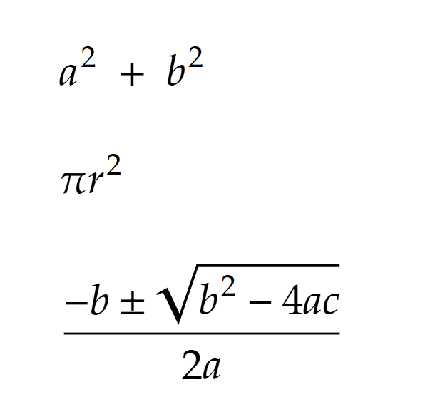

Посвятим этот урок пониманию базовых принципов кода VBA.
Правила написания кода называются синтаксисом. Если писать код не по правилам синтаксиса, то он не будет выполняться, и возникнет ошибка.
Данное описание - неформальное. Оно не требует досконального вникания в термины, - в них можно и запутаться. Достаточно получить общее представление.
Для ясности - задавайте любые вопросы преподавателю!
💡 В английском языке для обозначения инструкций используется целый ряд терминов, каждый из которых имеет свою область применения и уникальное значение:
Эти термины помогают точно описать различные аспекты программирования по сравнению с более общим термином "оператор", который часто применяется на русском языке.
Вот иллюстрации этих терминов:
| Термин (англ.) | Перевод (рус.) | Описание | Пример |
|---|---|---|---|
| Instruction | Инструкция | Общее действие или указание | x = 5 |
| Statement | Оператор | Конкретная конструкция языка | If x > 5 Then MsgBox "Больше 5" |
| Operator | Оператор | Символ или слово для выполнения операции | result = 5 + 3 |
| Command | Команда | Действие, выполненное по запросу | Application.Run "MacroName" |
| Expression | Выражение | Комбинация значений и операторов | total = price * quantity |
| Clause | Предложение | Часть более сложной конструкции | If x > 5 Then |
| Directive | Директива | Инструкция для компилятора | #If Win64 Then |
В этом конспекте будем использовать термин "инструкция", чтобы отличать команды языка от операторов (например, математических).
По умолчанию VBA предполагает, что каждая строка кода представляет отдельную инструкцию.
Однако, если строка выходит слишком длинная, можно перенести её часть на следюущую строку.
Для этого используется символ продолжения строки (_).
Пример:
Range("A1").Formula = "=SUM(B1:B10) + " & _
"SUM(C1:C10)"
Здесь символ подчеркивания _ указывает VBA, что инструкция продолжается на следующей строке.
Да, можно записать несколько инструкций в одной строке.
После одной инструкции добавьте двоеточие (:), а затем напишите следующую инструкцию в этой же
строке.
Это может пригодиться для написания компактного кода, но следует использовать этот подход с осторожностью, чтобы сохранить читаемость кода.
Пример:
Dim x As Integer: x = 10: MsgBox x
x как целого числа.10 переменной x.x в окне сообщения.Инстркции могут иметь разный вид. Давайте рассмотрим это на примерах:
| Пример | Пояснение |
|---|---|
Range("A1").Value = 5 |
Записывает число 5 в ячейку A1. |
Range("B2").Value = "Hello" |
Записывает текст "Hello" в ячейку B2. |
Range("C5").Font.Bold = True |
Устанавливает для текста в ячейке C5 полужирное начертание. |
Sheets("Лист1").Name = "Новый лист" |
Переименовывает лист "Лист1" в "Новый лист". |
Application.ScreenUpdating = False |
Отключает обновление экрана для ускорения выполнения кода. |
Selection.Interior.Color = vbYellow |
Устанавливает желтый цвет фона для выделенных ячеек. |
Функции и процедуры - это блоки кода, которые выполняют определенную задачу. У них есть имя и могут быть аргументы. Функции (в отличие от процедур) вычисляют и возвращают значение - результат.
| Пример | Пояснение |
|---|---|
MsgBox "Привет, мир!" |
Выводит на экран окно сообщения с текстом "Привет, мир!". |
result = Application.Sum(Range("A1:A5")) |
Вычисляет сумму чисел в диапазоне A1:A5 и присваивает результат переменной result. |
MsgBox "Текущая дата: " & Date |
Выводит окно сообщения с текущей датой. |
average = Application.WorksheetFunction.Average(Range("B1:B10")) |
Вычисляет среднее арифметическое чисел в диапазоне B1:B10 и присваивает результат переменной
average. |
Используются для управления потоком (порядком) выполнения кода.
| Пример | Пояснение |
|---|---|
If x > 5 Then MsgBox "Больше 5" |
Если значение переменной x больше 5, выводится сообщение "Больше 5". |
For i = 1 To 10 Cells(i, 1).Value = i Next i |
Цикл For: записывает числа от 1 до 10 в ячейки A1-A10. |
Do While x < 100 x = x + 10 Loop |
Цикл Do While: выполняется, пока x меньше 100, увеличивая x на 10 на
каждой итерации. |
| Пример | Пояснение |
|---|---|
Dim cell As Range |
Объявляет переменную cell как объект типа Range (диапазон ячеек). |
Const PI = 3.14159 |
Объявляет константу PI со значением 3.14159. |
' Это комментарий |
Комментарий - пояснение кода, не является выполняемой инструкцией. |
#Const DEBUG_MODE = True |
Директива компилятора: объявляет условную константу DEBUG_MODE. |
Option Explicit |
Директива: требует явного объявления всех переменных. |
Public myVariable As Integer |
Объявляет глобальную переменную myVariable типа Integer (целое число). |
Private sub DoSomething() ... End Sub |
Объявляет приватную подпрограмму DoSomething, доступную только внутри текущего модуля. |
Значения, также называемые литералами, представляют собой непосредственно записанные в коде данные, которые программа использует для выполнения операций. Они могут быть разных типов:
10, -5, 0), с плавающей точкой
(3.14, -2.5), валюта (100.50)."Hello, world!",
"VBA", "" - пустая строка).True (истина) или False (ложь).#2024-03-15#,
#1/1/2025#).Примеры:
Dim age As Integer
age = 25 ' 25 - это числовой литерал
Dim name As String
name = "John Doe" ' "John Doe" - это текстовый литерал
Dim isAdult As Boolean
isAdult = True ' True - это логический литерал
Dim birthDate As Date
birthDate = #1990-05-10# ' #1990-05-10# - это литерал даты
Операторы — это специальные символы или ключевые слова, которые указывают программе, какое действие нужно выполнить над значениями (операндами).
Виды операторов:
В зависимости от типа значений (операндов), к ним могут применяться разные операторы.
| Тип оператора | Операторы | Тип операндов | Пояснение |
|---|---|---|---|
| Арифметические | +, -, *, /, \, Mod,
^ |
Числа (целые и с плавающей точкой) | + (сложение),- (вычитание),* (умножение),/
(деление),\ (целочисленное деление - деление с отбрасыванием дробной
части),Mod (остаток от деления),^ (возведение в степень) |
| Сравнения | =, <>, >, <, >=,
<= |
Числа, строки, даты, логические значения, объекты | = (равно),<> (не равно),>
(больше),< (меньше),>= (больше или равно),<=
(меньше или равно).Результат операций сравнения — логическое значение ( True или
False). |
| Логические | And, Or, Not, Xor |
Логические значения (True, False) |
And (логическое И - истинно, если оба операнда истинны),Or (логическое ИЛИ -
истинно, если хотя бы один из операндов истинен),Not (логическое НЕ - инвертирует логическое
значение операнда),Xor (логическое исключающее ИЛИ - истинно, если только один из операндов
истинен) |
| Конкатенации | & |
Строки | & (объединение строк) |
| Присваивания | = |
Любые (в зависимости от типа переменной) | = (присваивание значения переменной) |
Примеры:
Dim sum As Integer
sum = 10 + 5 ' + - оператор сложения
Dim message As String
message = "Hello" & " " & "World!" ' & - оператор конкатенации
Dim isEqual As Boolean
isEqual = (5 = 5) ' = - оператор сравнения
Выражение состоят из значений и операторов. Их можно вычислить и получить результат.
Выражения могут быть простыми (например, одно значение или одна переменная) или сложными (например, комбинация нескольких значений, переменных и операторов).
Так же как в математических формулах, действуют приоритеты операторов, которые определяют порядок вычислений. Выражения могут использовать скобки для изменения порядка вычисления.
Примеры:
Dim result As Integer
result = 10 * 2 + 5 ' арифметическое выражение
result = (x > 0) And (y < 10) ' логическое выражение
Dim greeting As String
greeting = "Hello, " & name & "!" ' Выражение с конкатенацией строк и переменной
💡 Поскольку переменные используются для хранения значений, их можно использовать в выражениях вместо прямого указания значения. Так же можно использовать функции, поскольку функции возвращают результат (значение).
Переменные служат для хранения значений. Перед использованием переменной ее нужно объявить, указав ее имя и тип данных.
Объявление переменных:
Dim variableName As DataType
Dim — ключевое слово для объявления переменной.variableName — имя переменной (должно соответствовать правилам именования).DataType — тип данных переменной (например, Integer, String,
Boolean, Date, Double, Object и другие).Тип переменной - это тип значения (данных), которое она хранит или может хранить.
Еще раз перечислим эти типы:
Типы данных:
Integer — целые числа.Long — длинные целые числа.Single — числа с плавающей точкой.Double — числа с плавающей точкой двойной точности.String — текст.Boolean — логические значения (True или False).Date — даты и время.Object — ссылки на объекты (например, ячейки Excel, листы, диаграммы).Variant — универсальный тип данных (может хранить данные любого типа).После объявления переменной можно присвоить ей значение. Для этого используется оператор присваивания
=.
Примеры:
Dim age As Integer ' Объявление переменной age типа Integer
age = 30 ' Присвоение значения 30 переменной age
Dim name As String ' Объявление переменной name типа String
name = "John Smith" ' Присвоение значения "John Smith" переменной name
Важные моменты:
name и Name — это одна и та
же переменная).💡 В VBA, как и в других языках программирования, есть ключевые слова, - такие как Dim,
As, Integer, String, Boolean, Date,
Object. Эти слова имеют специальное значение, и вы не можете использовать их в качестве названий
переменных.
Немало материала на сегодня, - вы сможете разобраться! Не стесняйтесь задавать вопросы. Желаю успехов!
Напишите следующие выражения на VBA:
Найдём и изучим любой код VBA на GitHub, например этот.
В этом коде найдите примеры: